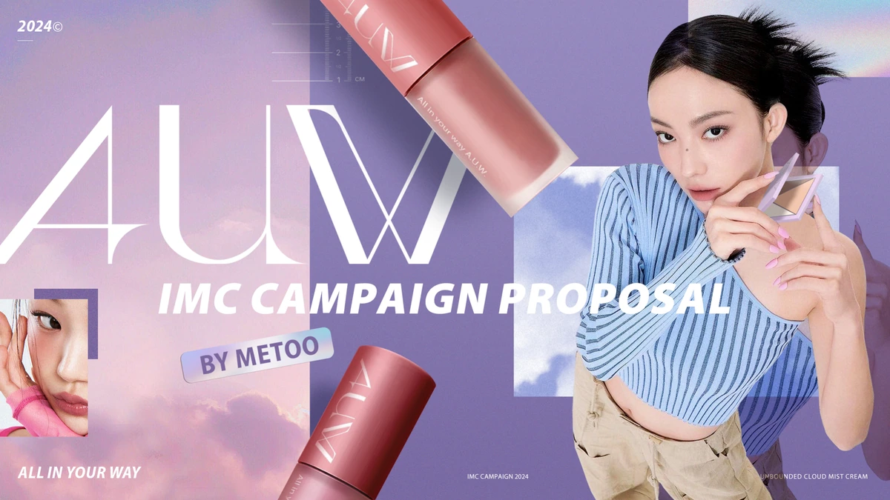
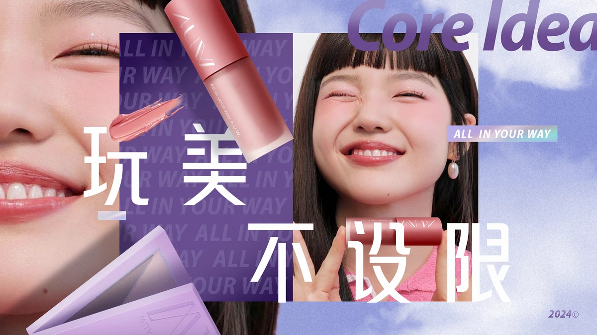
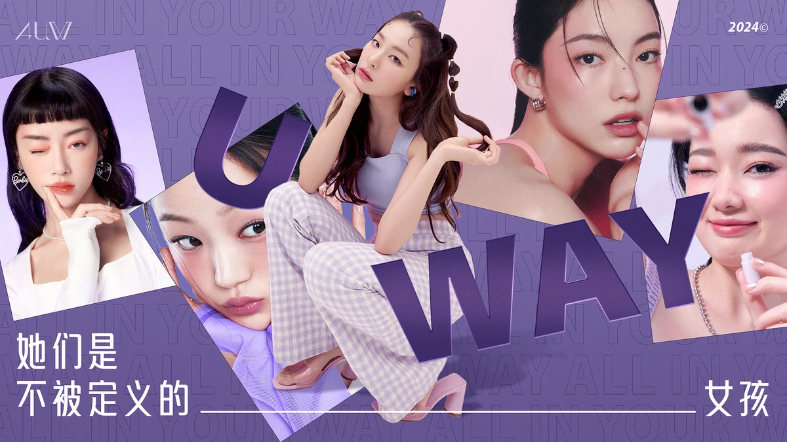
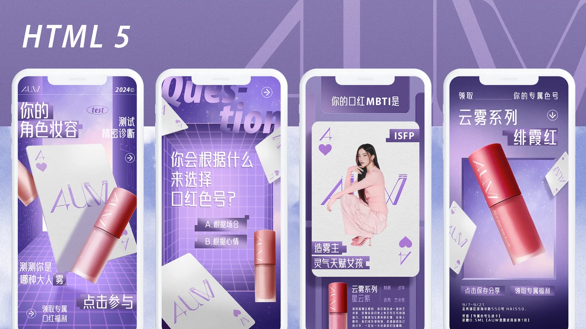
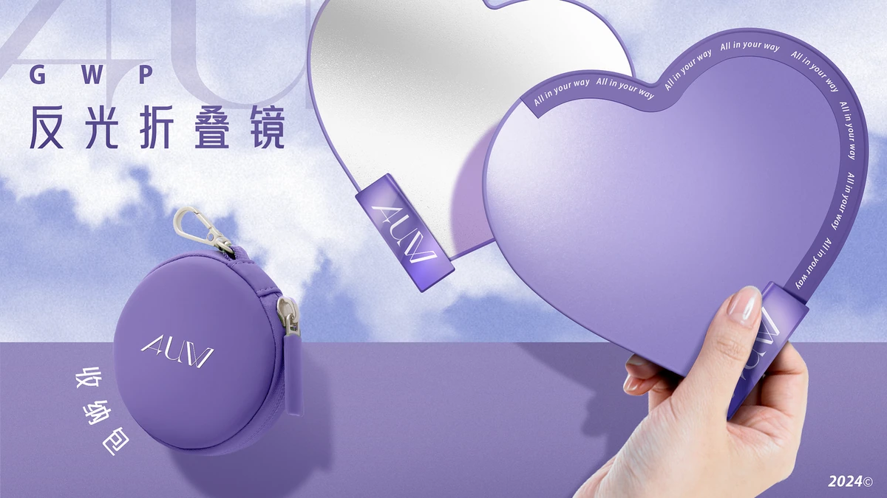

AUW 新品上市整合营销

- Brand
- AUW（新锐彩妆品牌）
- Project
- AUW 新品上市整合营销（IMC Campaign）
- Role
- 视觉定调、KV／海报设计、H5 与社媒视觉、提案内容制作
- Status
- PITCH DESIGN
项目概览
项目背景
AUW 是一个倡导“无边界美学”的新锐彩妆品牌。围绕云雾系列首发，我参与建立上市视觉，并设计社媒内容、互动 H5 与周边物料，覆盖种草到线下引流。
主要交付物
前期品牌视觉定调（KV／海报）、创意周边物料设计（折叠镜／收纳包等）、O2O 引流互动 H5，以及针对微信／小红书／抖音／微博定制的社媒传播内容与视觉资产。



